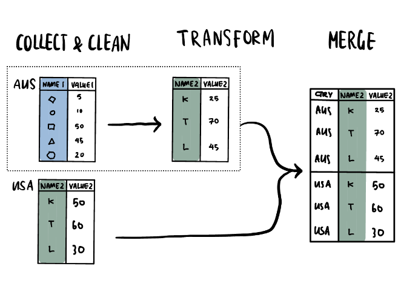
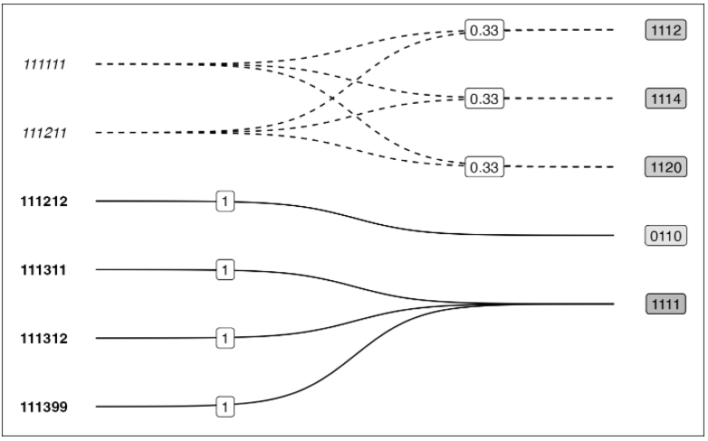
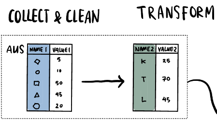
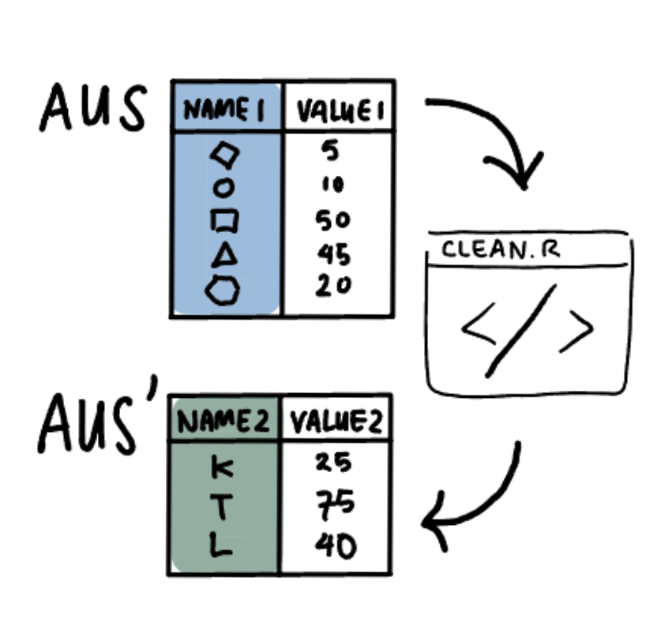
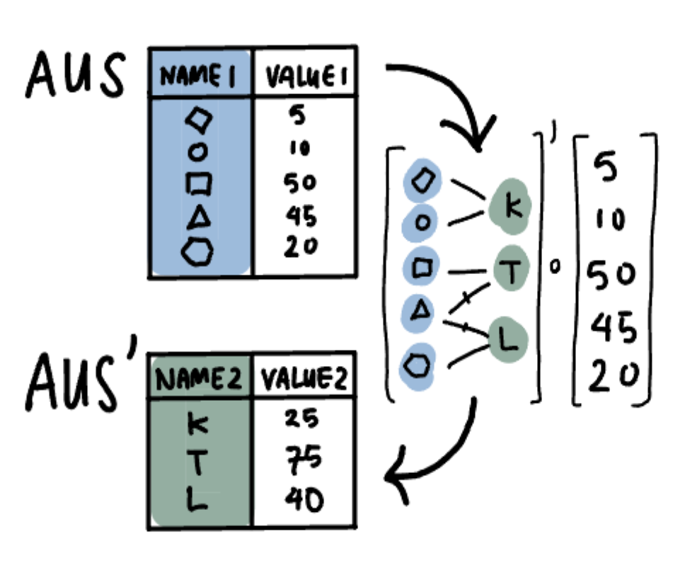
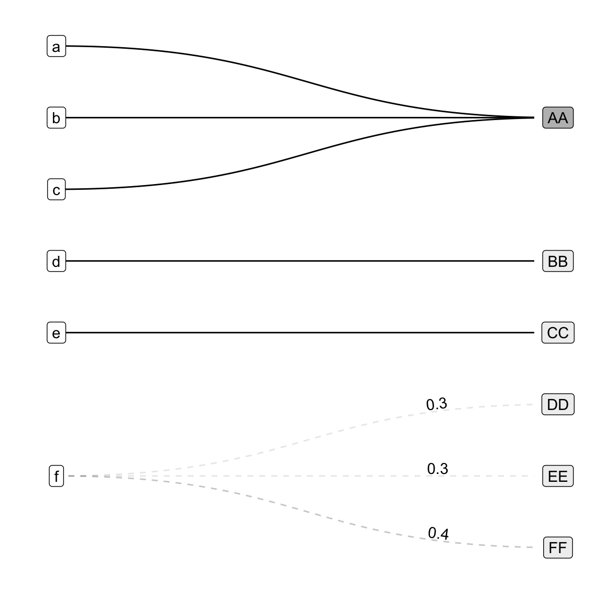
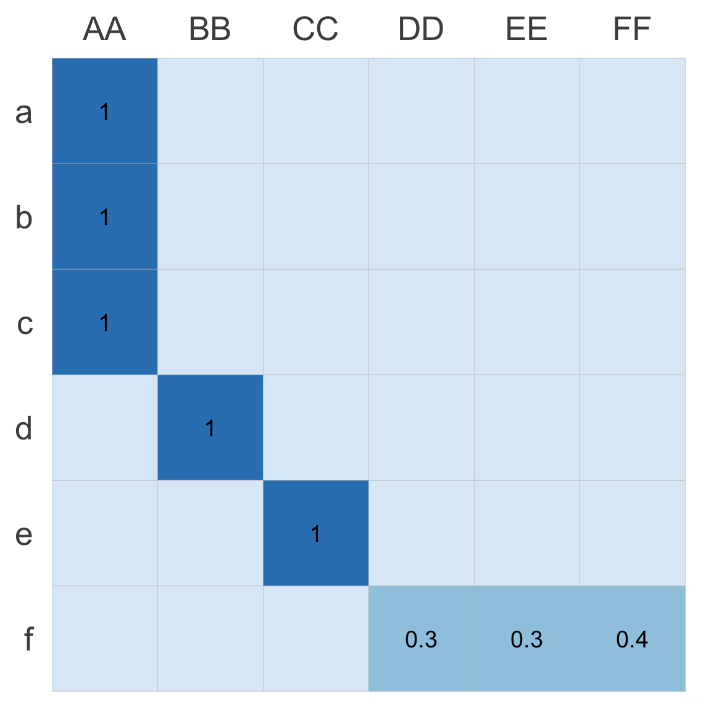
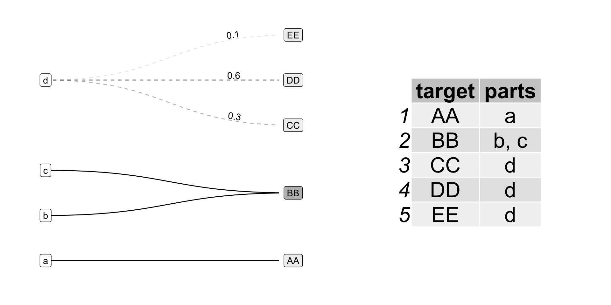
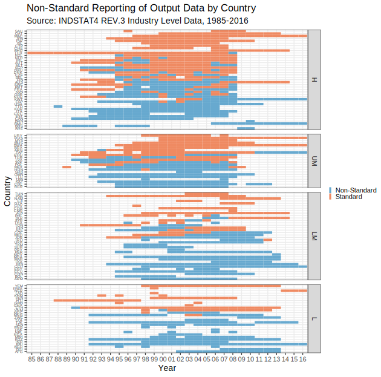

| anzsco22 | anzsco22_descr | count |
|---|---|---|
| 111111 | Chief Executive or Managing Director | 1000 |
| 111211 | Corporate General Manager | 500 |
| 111212 | Defence Force Senior Officer | 40 |
| 111311 | Local Government Legislator | 300 |
| 111312 | Member of Parliament | 150 |
| 111399 | Legislators nec | 10 |
Visualising Category Recoding and Redistributions
IASC-ASR 2023, Macquarie University, Sydney
Cynthia A. Huang
Department of Econometrics and Business Statistics, Monash University
supervised by Rob J Hyndman, Sarah Goodwin and Simon Angus
Overview
Background & Motivation
- Ex-Post Harmonisation
- Occupation Codes (ANZSCO22) Example
Proposed Contributions
- Cross-Taxonomy Transformation
- Crossmap Information Structure
- Crossmap Visualisations
Implications and Future Work
- Validate data quality and document preprocessing decisions
- Explore imputation properties
Background & Motivation
When do we encounter category recoding and redistribution?
Ex-Post Harmonisation 1/2
Ex-post (or retrospective) data harmonization refers to procedures applied to already collected data to improve the comparability and inferential equivalence of measures from different studies (Kołczyńska 2022)

Ex-Post Harmonisation 2/2
Defining or selecting mappings between classifications or taxonomies,
Implementing and validating mappings on given data,
Documenting and analysing the implemented mappings.
Example Harmonisation 1/3
Typical cases: labour statistics, macroeconomic and trade data, census and election data.
Example Harmonisation 2/3
Australian and New Zealand Standard Classification of Occupations (ANZSCO)
# A tibble: 6 × 2
anzsco22 anzsco22_descr
<chr> <chr>
1 111111 Chief Executive or Managing Director
2 111211 Corporate General Manager
3 111212 Defence Force Senior Officer
4 111311 Local Government Legislator
5 111312 Member of Parliament
6 111399 Legislators nec International Standard Classification of Occupations (ISCO)
# A tibble: 5 × 2
isco8 isco8_descr
<chr> <chr>
1 1112 Senior government officials
2 1114 Senior officials of special-interest organizations
3 1120 Managing directors and chief executives
4 0110 Commissioned armed forces officers
5 1111 Legislators Example Harmonisation 3/3

Possible “relations” from source ANZSCO22 to target ISCO8 codes
- from-one-to-one-unique: renaming (e.g. middle link)
- from-one-to-one-shared aggregation (e.g. bottom three links)
- from-one-to-many disambiguation or redistribution (e.g. top links)
Data Task Abstraction & Encapsulation
Can we define harmonisation tasks to be easier to visualise and examine?
Cross-Taxonomy Transformation
A Working Definition
Taking data collected under a source taxonomy, and transforming them into “counter-factual” observations indexed by a target taxonomy.

Existing Implementations

Given a desired mapping, we still need to implement the transformation.
- idiosyncratic coding scripts
- re-use limited by script readability and language
- ad-hoc and incomplete quality validation
- difficult to visualise and explore transformation logic
Improved Implementation: Crossmaps

We define a new information structure, the crossmap, to encapsulate transformation logic:
- separates mapping specification from implementation
- validate via graph properties rather than code review
- examine and visualise matrix, table, or node-link graph representations
Crossmaps
A new information structure for specifying, validating, implementing and visualising cross-taxonomy transformations.
Crossmaps: Equivalent Representations
Weighted Bi-Partite Graph

Transition / Bi-Adjacency Matrix

Edge List Table / Adjacency List
| from | to | weights |
|---|---|---|
| a | AA | 1.0 |
| b | AA | 1.0 |
| c | AA | 1.0 |
| d | BB | 1.0 |
| e | CC | 1.0 |
| f | DD | 0.3 |
| f | EE | 0.3 |
| f | FF | 0.4 |
Crossmaps as Linear Mappings

Hulliger (1998) formulates links between statistical classifications as linear mappings and shows:
- transforming data from one classification to another can be implemented as matrix multiplication.
- multiple sequential classification changes can be described as matrix products.
Data Transformation using Crossmaps
Zhou and Ordonez (2020) shows that matrix multiplication can be implemented using SQL operations on edge lists.
Thus implementation can be done as a two-input function which:
- Validates transformation logic
- Checks the crossmap fully covers the source data
- Transforms the data using join, mutate and summarise operations (see Appendix)
Crossmap Visualisations: Bi-Graphs

Use visual channels such as layout/ordering, text style, line style, colour saturation, and annotations to highlight key preprocessing decisions:
- which data are split vs. not split?
- what are the split proportions?
- what is the composition of the transformed data?
Implications & Future Work
What else can the crossmap approach reveal or illuminate?
Tracking and Quantifying Data Imputation
- Valid transformation logic doesn’t guarantee the quality or usability of transformed data
- Crossmaps allow us to visualise the extent and quantify the degree of imputation
- We can also extract transformation logic from existing scripts

Comprehension of Preprocessing Decisions
isic-non-std-split.R [59 lines]
# function: split values between isic code in isiccomb group
split_isiccomb <- function(threefour_df) {
#' Helper function to split isiccomb values across isic codes
#' @param threefour_df df with 3/4 digit values across isic & isiccomb
# make list for interim tables
interim <- list()
# extract rows with isiccomb codes
interim$isiccomb.rows <-
threefour_df %>%
filter(., str_detect(isiccomb, "[:alpha:]"))
# test that we are not losing any data through spliting
test_that("No `country,year` has more than one recorded `value` per `isiccomb` group", {
rows_w_many_values_per_isiccomb <-
interim$isiccomb.rows %>%
group_by(country, year, isiccomb) %>%
## get no of recorded (not NA) values for given `country, year, isiccomb`
summarise(n_obs = sum(!is.na(value))) %>%
filter(n_obs != 1) %>%
nrow()
expect_true(rows_w_many_values_per_isiccomb == 0)
})
# calculate average value over isiccomb group for each country, year
interim$isiccomb.avg <-
interim$isiccomb.rows %>%
# group isiccomb rows, replace na with 0 for averaging
group_by(country, year, isiccomb) %>%
mutate(value = replace_na(value, 0)) %>%
# split combination value over standard isic codes in isiccomb group
summarise(
avg.value = mean(value),
## checking variables
n_isic = n_distinct(isic),
n_rows = n()
) %>%
mutate(row_check = (n_isic == n_rows))
# return(interim$isiccomb.avg)
## check n_isic == n_rows
test_that("isiccomb split average is calculated with correct denominator", {
expect_true(all(interim$isiccomb.avg$row_check))
})
# output processed data
final <-
left_join(threefour_df, interim$isiccomb.avg, by = c("country", "year", "isiccomb")) %>%
rename(value.nosplit = value) %>%
mutate(
value = coalesce(avg.value, value.nosplit),
split.isiccomb = !is.na(avg.value)
) %>%
select(country, year, isic, isiccomb, value, value.nosplit, split.isiccomb) # not checking variables
return(final)
}We can use Quantitative User Study Experiments to explore:
- Which representations of transformation logic are best for communicating data preprocessing decisions?
- Are crossmap visualisations more easily interpreted than code or table representations?
- Does effectiveness differ by audience (e.g. replication, peer-review, non-technical domain experts)?
Thanks! Any Questions?
Final remarks
- Ex-Post Harmonisation is a complex form of data imputation!
- Visualisation can be used to communicate important data preprocessing decisions
- Designing visualisations can also lead to new statistical insights
- I’m looking for (imputation) case studies and (comprehension) experiment participants!
Useful links
- More details on crossmaps and visualising them: arxiv.org/abs/2308.06535
- {xmap} package (work in progress): github.com/cynthiahqy/xmap
- Slides: cynthiahuang.quarto.pub/iasc-asr-vis-cat
- Find me at: cynthiahqy.com, @cynthiahqy and cynthia.huang[at]monash.edu
References & Acknowledgements
References
Hulliger, Beat. 1998. “Linking of Classifications by Linear Mappings.” Journal of Official Statistics 14 (January): 255–66.
Kołczyńska, Marta. 2022. “Combining Multiple Survey Sources: A Reproducible Workflow and Toolbox for Survey Data Harmonization.” Methodological Innovations 15 (1): 62–72. https://doi.org/10.1177/20597991221077923.
Zhou, Xiantian, and Carlos Ordonez. 2020. “Matrix Multiplication with SQL Queries for Graph Analytics.” In 2020 IEEE International Conference on Big Data (Big Data), 5872–73. Atlanta, GA, USA: IEEE. https://doi.org/10.1109/BigData50022.2020.9378275.
Acknowledgements
Thank you to Laura Puzzello for her ongoing support and funding of earlier iterations of this work. Many thanks also to Rob Hyndman, Sarah Goodwin, Simon Angus, Patrick Li, Emi Tanaka and my other colleagues at Monash EBS and Monash SoDa Labs for their helpful guidance, feedback and suggestions. The author is supported in part by top-up scholarships from Monash Data Futures Institute and the Statistical Society of Australia.
Appendix
Equivalent Representation Definitions
Crossmaps can be represented or conceptualised in the following forms:
- Weighted Bi-Partite Graph
- Edge weights represent the proportion of source node value to be redistributed to target node.
- Linear Mapping / Bi-Adjacency Matrix
- Makes explicit non-correspondence between source-target pairs (represented as zeroes). The transformation matrix has the same constraints as a Markov chain transition matrix.
- Edge List Table / Adjacency List
- Facilitates implementation of data transformations using database join, mutate and summarise operations.
Future Visualisation Work
Scaling to larger crossmaps via existing graph visualisation tools and idioms
- Interactivity (e.g. tooltips for category description labels)
- Filter by graph properties (e.g. leave out one-to-unique links)
Visualising multiple related crossmaps?
- Multiple crossmaps simultaneously (e.g. for multiple countries in the same year)
- Multiple crossmaps sequentially (e.g. for multiple years)
- Aggregate/Collapse/Embed sub-graphs (e.g. one-to-shared links)
Visualising imputation extent and degree on actual data?
- Visualise the imputation extent (i.e. proportion of data transformed) and imputation degree (i.e. redistribution vs. aggregation vs. renaming)
- Compare different transformation logics (e.g. different crossmaps) on the same data
Data Transformation using Crossmaps 2/3
- Transformations always involves recoding category labels:
111212: Defence Force Senior Officer --> 0110: Commissioned armed forces officers
- In addition to these character transformations, numeric transformation can include:
- “pass-through” of numeric values – i.e. one-to-unique relations
- numeric aggregation – i.e. one-to-shared relations
- numeric redistribution – i.e. one-to-many relations
Data Transformation using Crossmaps 2/3
We can encompass the string and numeric operations in the following tabular operations:
- Rename original categories into target categories
- Multiply source node values by link weight.
- Summarise mutated values by target node.